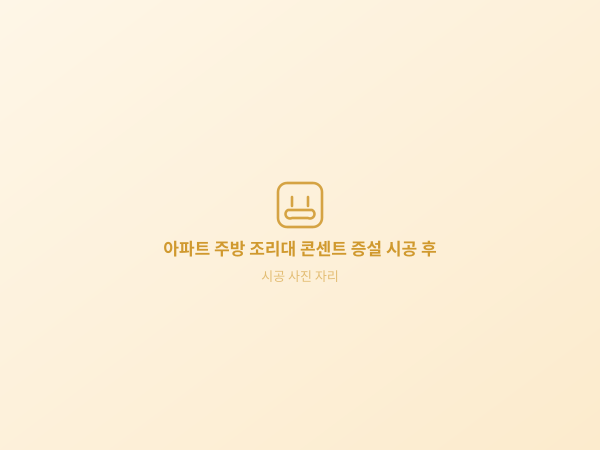
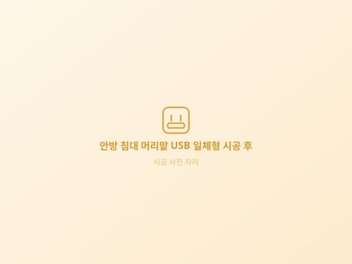

01
멀티탭이 아니라 회로를 봅니다
콘센트가 모자란 건 대부분 회로가 모자란 것입니다. 분전반부터 확인해 늘려도 되는 자리인지 먼저 판단합니다.
멀티탭이 늘어나는 건 콘센트가 아니라 회로가 모자라다는 신호입니다. 분전반과 기존 배선을 먼저 확인한 뒤, 그 집에 맞는 자리와 방식만 골라 시공합니다.
현장을 보고, 필요한 만큼만 시공합니다
콘센트를 늘리는 일은 벽을 뚫는 일이 아니라, 전기를 어디서 어떻게 끌고 올지 정하는 일입니다.
콘센트가 모자란 건 대부분 회로가 모자란 것입니다. 분전반부터 확인해 늘려도 되는 자리인지 먼저 판단합니다.
기존 배선 연장, 몰딩·걸레받이 활용까지 먼저 검토합니다. 타공이 필요하면 분진을 집진하며 작업합니다.
변색되거나 헐거워진 콘센트는 과열 흔적일 수 있습니다. 증설하러 가서 발견되면 반드시 알려드립니다.
콘센트가 필요한 이유가 다르면, 자리와 제품과 회로도 달라야 합니다.
전자레인지·에어프라이어·밥솥이 한 자리에 몰려 가장 먼저 부족해지는 곳입니다. 조리대 높이에 맞춰 매입형으로 넣으면 상판에 선이 늘어지지 않습니다.
건조기를 들이면서 콘센트가 모자라 문의가 가장 많은 자리입니다. 습기가 있는 공간이라 방수형으로 마감합니다.
TV·셋톱박스·사운드바·공유기까지 붙으면 두 구로는 감당이 안 됩니다. 벽걸이 TV라면 뒤쪽에 넣어 선이 보이지 않게 정리합니다.
스타일러와 제습기, 김치냉장고 자리에 전기가 필요해집니다. 붙박이장 뒤에 가려진 콘센트는 옆면이나 상부로 빼내 살립니다.
실외는 실내와 같은 제품을 쓰면 안 됩니다. 방수형에 잠금 커버를 쓰고 배선은 관에 넣어 빗물과 결빙에 대비합니다.
불필요한 절차 없이, 정확한 판단에 필요한 단계만 거칩니다.
설치할 벽면 사진과 놓으실 가전을 문자로 보내주시면 1차로 방식을 검토합니다.
방문 후에는 최대한 현장 상황과 조건에 맞게 시공해 드립니다. 어디에 무엇을 놓으실 건지 먼저 여쭤보고, 그 자리에 맞는 방법을 함께 정합니다.
자리와 구 수를 함께 정한 뒤 보양하고 작업합니다. 분진까지 정리해 드립니다.
전원을 넣어 실제로 들어오는지, 발열이나 이상은 없는지 함께 점검한 뒤 마칩니다.
같은 콘센트라도 어느 회로에서 끌어와 어느 높이에 다는지에 따라 쓰는 느낌과 안전이 완전히 달라집니다.
튼튼전기 시공 원칙지역 이름을 누르면 해당 지역 콘센트 추가설치 안내로 이동합니다.
목록에 없는 지역이어도 먼저 연락 주세요. 거리와 일정에 따라 방문 가능한 경우가 많습니다.
주방과 베란다, 드레스룸부터 마당까지 — 공간별 시공 전후를 정리했습니다.

주방 후드 옆에 콘센트가 없어 멀티탭을 끌어 쓰던 조리대에 2구를 새로 냈습니다.
하부장 안쪽에 전용 자리를 만들고 물이 닿지 않도록 높이를 띄워 시공했습니다.
상판 위로 선이 올라오지 않도록 아일랜드 측면에 매입형으로 넣었습니다.
벽걸이 TV 뒤쪽에 매입해 셋톱박스와 사운드바 선이 보이지 않게 정리했습니다.

침대를 놓으면 가려지던 자리를 옮기고 어댑터 없이 쓰도록 USB 일체형으로 시공했습니다.
책상과 조명 자리를 함께 보고, 손이 닿는 높이라 안전 커버형으로 설치했습니다.
한 콘센트를 나눠 쓰다 차단기가 내려가던 자리를 회로부터 나눠 두 자리로 만들었습니다.
습기가 많은 자리라 방수 커버를 쓰고 바닥에서 충분히 띄워 고정했습니다.
붙박이장 뒤에 가려져 있던 콘센트를 옆면으로 빼내 스타일러 자리를 만들었습니다.
선반 높이를 피해 위치를 잡아 짐을 넣어도 가려지지 않도록 시공했습니다.
빗물이 타고 들어오지 않도록 각도를 잡고 잠금 커버와 배선관으로 마감했습니다.
먼지와 습기가 많은 공간이라 커버형으로 시공하고 보일러 회로와 분리했습니다.
기존 콘센트를 나눠 쓰던 구조를 바꿔 분전반에서 전용 회로를 따로 뺐습니다.
차단기 여유가 없어 증설이 어렵던 집에서 분전반부터 정리한 뒤 진행했습니다.
현장을 보고 그 집에 맞는 방법 하나만 골라 깔끔하게 끝냅니다.
입주 예정 · 새 아파트 · 신도시 단지
구축 단지 · 재건축 전 · 1기 신도시
다세대 · 연립 · 오피스텔 · 원룸
단독주택 · 타운하우스 · 복층
개수만으로 정해지지 않습니다. 아래 네 가지가 금액을 가릅니다.
분전반이나 기존 콘센트에서 새 자리까지의 거리입니다. 멀수록 자재와 시간이 늘어나기 때문에 방문하면 이 경로부터 봅니다.
콘크리트·석고·조적 중 무엇이냐에 따라 작업 방식이 달라집니다. 구축 아파트는 무리하게 파지 않고 몰드 배선으로 돌리기도 합니다.
분전반에 차단기를 더 넣을 자리가 있는지에 따라 범위가 달라집니다. 여유가 없으면 그 부분부터 정리해야 합니다.
일반 2구인지 매입형·방수형·USB 일체형인지에 따라 자재비가 달라집니다. 쓰실 가전을 알려주시면 맞춰 안내드립니다.
전화로 대략적인 범위는 말씀드릴 수 있지만, 확정 금액은 벽과 분전반을 직접 본 뒤에 안내드립니다. 현장에서 견적을 보시고 진행하지 않으셔도 괜찮습니다.
공간과 상황에 맞춘 안내를 정리했습니다.
네, 한 자리라도 방문합니다. 다만 이동 거리에 따라 일정이 달라질 수 있어 전화로 지역과 상황을 먼저 알려주시면 조율이 빠릅니다.
벽 구조와 배선 거리, 회로 여유에 따라 달라져 전화만으로 확정하기 어렵습니다. 사진을 보내주시면 방문 전에 대략적인 범위를 안내드리고, 현장에서 조건이 다르면 그 자리에서 설명드린 뒤 결정하시면 됩니다.
필요한 만큼만 건드립니다. 기존 배선을 연장하거나 몰딩·걸레받이를 따라 배선을 숨기는 방법을 먼저 검토하고, 타공이 필요하면 분진을 집진하며 작업합니다.
단지에 따라 작업 가능 시간과 소음 규정이 있습니다. 방문 전에 확인해 드리고 필요하면 협의한 뒤 일정을 잡습니다.
권하지 않습니다. 건조기는 소비 전력이 커서 기존 콘센트를 나눠 쓰면 과열과 차단기 문제가 생깁니다. 회로를 나눌 수 있는지 먼저 확인합니다.
한두 자리 증설은 보통 반나절에서 하루 안에 끝납니다. 분전반을 손봐야 하거나 배선 경로가 길면 더 걸릴 수 있어 현장에서 미리 말씀드립니다.
벽을 타공하는 시공은 집주인의 사전 동의가 필요합니다. 기존 배선을 연장하거나 몰드 배선으로 처리하는 방법도 있어, 상황에 맞춰 함께 안내드립니다.
네, 평일과 주말 모두 08:00~20:00 사이 상담 및 방문이 가능합니다. 편하신 시간에 연락 주세요.